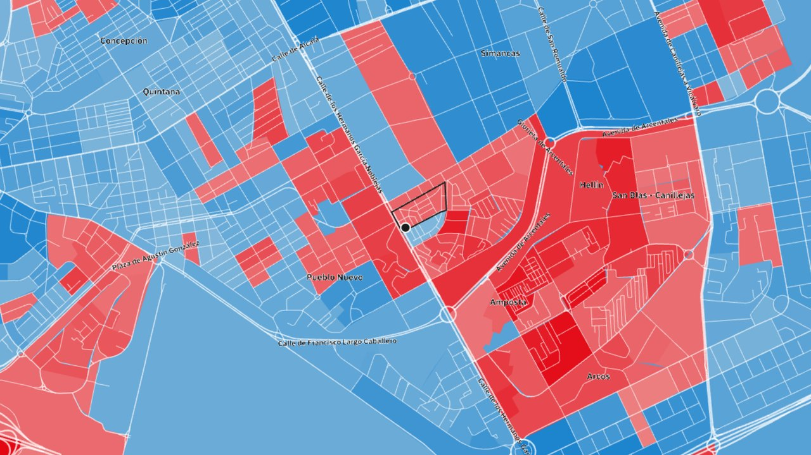
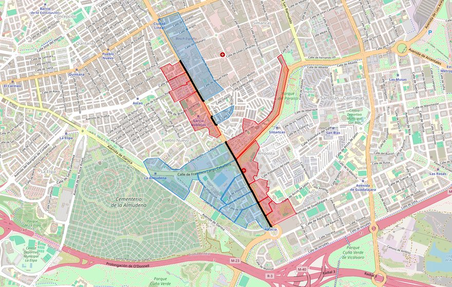
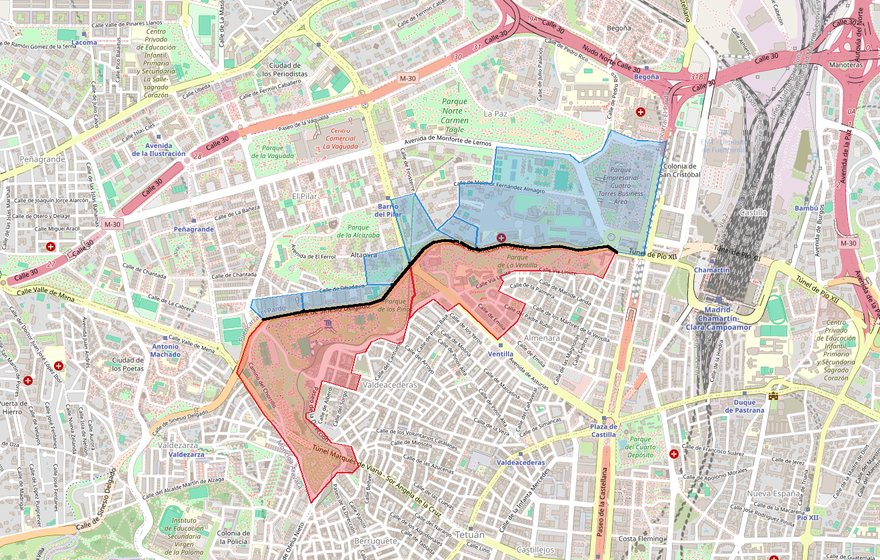
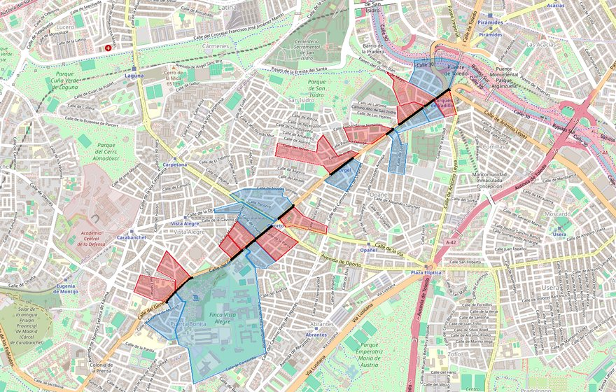
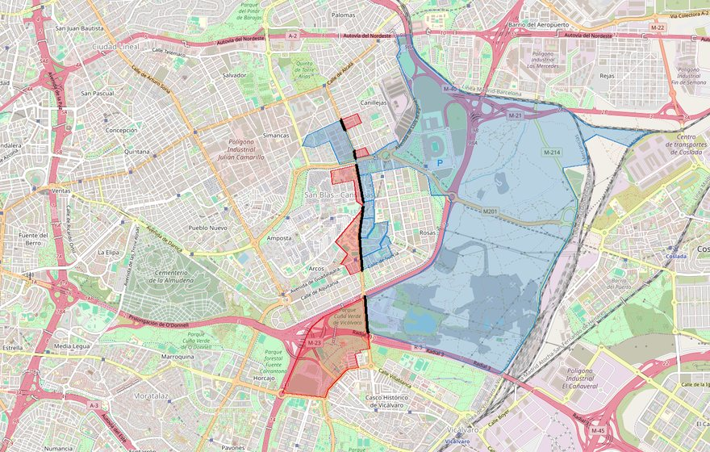

Actualidad · Dos aceras, dos ganadores · Madrid
A cinco semanas del 29N: en la calle de los Hermanos García Noblejas, en Madrid, PP y PSOE se cambian de acera 12 veces, y el PP siempre gana en el lado con más renta
En Madrid, una de cada cinco parejas de secciones censales vecinas eligió un ganador distinto en 2023. Las calles donde más se repite son Hermanos García Noblejas, General Ricardos, la avenida de las Águilas y Hacienda de Pavones. En Sinesio Delgado, entre Tetuán y Fuencarral, el salto llega a 27 puntos.
Por Nacho G. del Álamo ·

Cada párrafo lleva una etiqueta: dato (cifra comprobable con las fuentes), patrón (relación que se repite, sin afirmar la causa), hipótesis (explicación posible, sin dos fuentes independientes) o contexto (hechos y declaraciones publicados por otros, enlazados). Cómo verificamos
DatoLa calle de los Hermanos García Noblejas baja desde la calle de Alcalá hasta la M-23 por el límite entre los distritos de Ciudad Lineal y San Blas-Canillejas. En las generales de julio de 2023, el partido más votado cambió de un lado a otro de la calle en 12 tramos. Al norte, junto a Simancas, el PP ganó en la acera de San Blas y el PSOE en la de Ciudad Lineal. Al sur, junto a La Almudena, fue al revés.
DatoLo que no cambió fue la renta. En los 12 tramos, la sección donde ganó el PP es la que tiene más renta por unidad de consumo: de media, 24.756 euros, frente a 18.741 en la sección de enfrente, donde ganó el PSOE. Son 16 secciones censales: nueve en Ciudad Lineal y siete en San Blas-Canillejas.

DatoEn el tramo norte, la sección de Pueblo Nuevo que da a la calle de los Silos votó al PSOE: 40,3%, con el PP en el 22,3%, y una renta de 15.634 euros. Enfrente, en Simancas, ganó el PP con el 37,8%, y el PSOE se quedó en el 29,0%; renta, 21.369 euros. En el tramo sur, la sección de Pueblo Nuevo junto a la calle del Idioma Esperanto votó al PP (40,7%) y tiene 26.882 euros de renta; la de enfrente, en Arcos, votó al PSOE (40,0%) y tiene 20.338. No siempre son saltos grandes: en tres tramos, al menos una de las dos secciones se decidió por menos de dos puntos entre el PP y el PSOE.
ContextoEsos cambios se pueden ver en el mapa electoral calle a calle, que es de donde sale la imagen de arriba: basta con escribir una dirección en el buscador y mirar las secciones de alrededor. Esta pieza hace con todo Madrid lo que el análisis del 15 de octubre hizo con una calle por ciudad en nueve ciudades.
Una de cada cinco parejas de vecinas
DatoHemos comparado cada una de las secciones censales de la ciudad de Madrid con sus vecinas. Son 6.112 parejas de secciones que comparten al menos 80 metros de límite y tienen al menos 400 electores cada una. En 1.207, el 19,7%, cada sección dio la victoria a un partido distinto. En casi todas, la pareja es PP contra PSOE; algo más de un centenar enfrenta a Sumar con alguno de los dos.
DatoPara saber qué separa a cada pareja, hemos buscado el nombre de la calle en cinco puntos de su límite común con el geocodificador de CartoCiudad (IGN). En 989 de las 1.207, al menos tres de los cinco puntos dan la misma calle. Las calles que más veces aparecen son Hermanos García Noblejas (12 parejas), General Ricardos (11), la avenida de las Águilas (10), Hacienda de Pavones (10) y la avenida de Canillejas a Vicálvaro (9). Todas están en distritos del sur y del este.
Ver la tabla por calle
PatrónEl patrón de García Noblejas se repite en casi toda la ciudad. De las 1.160 parejas de vecinas en las que un lado votó al PP y el otro a otro partido, en 983 (el 84,7%) la sección donde ganó el PP tiene más renta, y en 943 (el 81,3%) votó más.
DatoHay excepciones. En la avenida de las Águilas, en Latina, el ganador cambia de lado en diez tramos, pero la sección del PP es la más rica solo en cinco: de media, 22.391 euros frente a 23.078. En la calle de Valmojado, también en Latina, son cinco de ocho. Ahí la renta no separa a los dos lados.
Ver la tabla por sección
Sinesio Delgado: Tetuán y Fuencarral

DatoEl salto más grande está en la calle de Sinesio Delgado, que separa Tetuán, al sur, de Fuencarral-El Pardo, al norte. En los seis tramos con ganador distinto, el PSOE ganó en el lado de Tetuán y el PP en el de Fuencarral. En la sección de Almenara, en Tetuán, el PSOE sacó el 36,9% y el PP el 29,3%; votó el 63,4% del censo y la renta es de 20.947 euros. Enfrente, en La Paz, el PP sacó el 56,8% y el PSOE el 19,2%; votó el 85,1% y la renta es de 41.915 euros. PP y Vox juntos sacan 26,4 puntos más en la acera norte.
ContextoTetuán es un distrito partido desde hace tiempo. La frontera de la que más se habla es la calle de Bravo Murillo, que según El Salto (2020) «algunos bautizan como “la Gran vía de la clase obrera”» y «ha funcionado como una “frontera” entre ese Madrid de alta cuna y el de clases más modestas». En el voto de 2023, Bravo Murillo solo separa dos parejas de secciones con ganador distinto, según nuestro cálculo. El salto se ve más en el borde norte del distrito.
Contexto«Tradicionalmente Madrid se ha dividido en una franja noroeste-sudeste, pero con los años se ha acrecentado», decía en el mismo reportaje Marta Domínguez Pérez, doctora en Sociología por la Universidad Complutense.
General Ricardos y Canillejas: saltos dentro del mismo barrio

DatoLa calle del General Ricardos atraviesa Carabanchel de norte a sur, y en 11 tramos el ganador cambia de lado. Aquí las diferencias de renta son pequeñas: 20.559 euros de media en el lado del PP y 18.271 en el de enfrente. Aun así, el lado del PP es el más rico en 10 de los 11. En San Isidro, la sección al sureste de la calle votó al PP (39,6%, con el PSOE en el 28,7%) y la del noroeste votó al PSOE (37,5%) con Sumar en el 24,6% y el PP en el 27,3%. La participación fue casi la misma: 71,3% y 71,0%.

DatoEn la avenida de Canillejas a Vicálvaro, en San Blas, son nueve tramos, y en los nueve el lado del PP es el más rico: 29.909 euros de media, frente a 20.559. Al oeste, en Simancas, una sección votó al PP con el 47,6% y tiene 37.557 euros de renta. Enfrente, en Canillejas, ganó el PSOE con el 40,4%, con 16.445 euros.
ContextoNueve de las doce calles del gráfico están, al menos en parte, en los nueve distritos del sur y el este que el Ayuntamiento incluye en el Plan SURES de reequilibrio territorial: Carabanchel, Latina, Moratalaz, Puente de Vallecas, San Blas-Canillejas, Usera, Vicálvaro, Villa de Vallecas y Villaverde. García Noblejas es justo el límite entre uno de ellos, San Blas-Canillejas, y Ciudad Lineal, que no lo está.
Lo que dicen los políticos y los estudios
ContextoLa desigualdad entre barrios es un argumento de campaña en Madrid. «Madrid tiene un gran problema que son sus brechas, hay que abordar las desigualdades, hay que reducir la pobreza activando el ascensor social», dijo Reyes Maroto al presentarse como candidata del PSOE a la Alcaldía en 2023, en un acto en Villaverde, según Europa Press. Maroto calificó entonces el Plan SURES de «fracaso». En abril de este año, la portavoz de Más Madrid en el Ayuntamiento, Rita Maestre, presentó un informe sobre desigualdad y lo resumió así en elDiario.es: «El PP ha construido un Madrid para ricos: una ciudad que abre sus puertas a las élites y las grandes fortunas, mientras deja atrás a las familias, a la gente trabajadora y a quienes más lo necesitan».
ContextoUn estudio con las 2.400 secciones de Madrid de Álvaro Sánchez García y Hugo Marcos Marné, publicado en Electoral Studies este año, encontró que la subida del alquiler se asocia con el voto de cada sección. «La vivienda es un fenómeno con ganadores y perdedores», explicaba Sánchez García en elDiario.es. «Aquí no aplica mucho eso del obrero de derechas».
ContextoEl politólogo Toni Rodon (Universitat Pompeu Fabra), que ha estudiado la segregación residencial, lo explicaba en elDiario.es: «[...] los pobres están cada vez más juntos y los ricos viven cada vez más entre ricos. Los dos polos se van separando».
HipótesisUna explicación posible de por qué el voto cambia en una calle concreta es que muchas de estas calles separan promociones de vivienda de épocas y precios distintos, y con ellas a vecinos con rentas distintas. No lo hemos comprobado calle a calle: los datos dicen dónde cambia el voto y dónde cambia la renta, no por qué.
ContextoSon datos de secciones, no de personas. Dicen cómo votó cada lado de la calle en conjunto, no quién votó qué. Una calle no es exactamente el límite de la sección en todos sus metros, y algunos tramos se deciden por pocos votos: con el 23 de julio de 2023 como referencia, el 29 de noviembre puede cambiar cualquiera de ellos.
Busca tu calle en el mapa electoral calle a calle · Más: La calle que parte el voto en nueve ciudades · Madrid barrio a barrio · Barrios pobres que votan a la derecha
Método y fuentes
- Qué se compara
- Las 6.112 parejas de secciones censales contiguas de la ciudad de Madrid (al menos 80 metros de límite común y 400 electores cada una) en las generales de 2023, con la calle que las separa y su renta por unidad de consumo de 2023.
- Límites
- Son datos de secciones, no de personas, y no explican por qué cada lado vota distinto. La calle de cada límite sale de un geocodificador en cinco puntos y puede no coincidir con el límite en todos sus metros; las cuatro calles con plano se han revisado a mano. Algunos tramos se decidieron por menos de dos puntos. La renta de las secciones más ricas está topada en 58.752 euros. Sin voto exterior.
- Cómo se calcula
- Voto: porcentaje sobre votos válidos. Pareja de secciones vecinas: comparten al menos 80 metros de límite (con 12 metros de tolerancia) y tienen al menos 400 electores cada una. Calle: la que devuelve el geocodificador inverso de CartoCiudad en al menos tres de cinco puntos del límite común. Lado del PP más rico: la sección donde ganó el PP tiene más renta por unidad de consumo que la de enfrente. Cifras reproducibles con los scripts del expediente de la pieza. Metodología de Actualidad · Metodología del Atlas
- Fuentes
- Ministerio del Interior, resultados electorales por mesa (Infoelectoral), vía pollspaindata. Sin voto exterior (CERA)
- INE, Atlas de Distribución de Renta de los Hogares (renta y edad por sección), vía ineAtlas.data
- CartoCiudad (IGN), geocodificador inverso para el nombre de cada calle
- OpenStreetMap, callejero y nombres de barrio (Nominatim)
- El Salto, Madrid ya no es ciudad para todos los «gatos» (2-9-2020)
- Europa Press vía Valencia Plaza, Maroto inicia la carrera hacia el Ayuntamiento de Madrid (4-2-2023)
- elDiario.es, informe de Más Madrid sobre la desigualdad (14-4-2026)
- Ayuntamiento de Madrid, Plan SURES (3-7-2020)
- elDiario.es, Álvaro Sánchez García sobre alquiler y voto en Madrid (9-2-2026)
- elDiario.es, entrevista a Toni Rodon (2-4-2023)
- Autoría
- Nacho G. del Álamo
- Revisión de datos y texto
- Nacho G. del Álamo, 21 de octubre de 2026
- Publicado · actualizado
- 21 de octubre de 2026 · 21 de octubre de 2026
- Correcciones
- Ninguna.
Serie «Camino al 29N»: 100 piezas
- El otro Clásico: en los barrios de renta media, el PP saca el triple de votos en Madrid que en Barcelona
- Así queda el mapa electoral de España antes del 29N: el PP ganó en 40 provincias y el PSOE, en 10
- Quién va con quién el 29N: Frente Amplio y Podemos, separados en 47 provincias; en 2015, juntos habrían sacado 15 diputados más
- Las provincias que deciden el 29N: 32 escaños se movían en 2023 con menos de 5.000 votantes, y el PP defiende 13
- Un voto en Santa Cruz de Mudela, 101 en Cantabria, 7.097 en Palencia: la semana en que el 29N se contó en márgenes
- Las dos calles que parten Barcelona: la Diagonal en el voto a la derecha, la Meridiana en el independentismo
- Quién vota qué, barrio a barrio: el PP sube 21 puntos donde pesan las rentas del capital, el PSOE 15 donde abundan los peones y Vox solo se mueve con los jubilados
- A seis semanas del 29N: en 534 barrios de España no votó ni la mitad del censo, y tres de cada cuatro están entre los más pobres
- Ante el 29N: del Polígono Sur a la Cañada Real, en 78 de los 93 barrios donde más pesan las ayudas sociales no votó ni la mitad
- Con el PSOE andaluz en mínimos: Sevilla, Jerez y otros 170 municipios que votaron a la izquierda en todas las generales de 1977 a 2008 dieron en 2023 más votos a PP y Vox
- Estás aquíA cinco semanas del 29N: en la calle de los Hermanos García Noblejas, en Madrid, PP y PSOE se cambian de acera 12 veces, y el PP siempre gana en el lado con más renta
- Vox busca el voto de los barrios obreros: en la Región de Murcia, nueve de cada diez secciones pobres ya votan más a PP y Vox que a PSOE y Sumar
- Sevilla vota por barrios y Lugo, mezclada: el índice que mide qué capitales están partidas por el voto
- El voto a Vox de las mujeres jóvenes se ha triplicado desde 2023, y la izquierda ha perdido 13 puntos entre ellas
- El PP saca 6 puntos al PSOE en las encuestas: ni el mayor fallo de la última década, el de 2023, daría el sorpasso que anuncia Iván Redondo
- El PP baja en las cinco encuestas de la semana, pero con Vox sigue sumando mayoría absoluta en todas
- Madrid es la puerta más cercana de Alvise al Congreso: le basta el 3% y las encuestas le dan el 2%
- Feijóo busca el voto del orden en la comunidad que más cita la inseguridad
- Dos años de la DANA: sus 74 pueblos llegan al 29N partidos, 38 del PSOE y 36 del PP
- Puente descarta dimitir y se juega en Valladolid el escaño de su número dos: sale en el 54%
- Ver las 100 piezas de la serie
Más datos: elecciones en Madrid barrio a barrio desde 1977 · Madrid calle a calle en el mapa electoral · más piezas sobre barrio a barrio.
Sigue leyendo
- EncuestasEncuestas de las elecciones generales del 29N: todas, con sus escaños, actualizadas cada día
- PactosSimulador de pactos del 29N: ¿quién puede gobernar? Decide qué vota cada partido
- Israel, las cuentas del 61Con todo el voto contado, Netanyahu solo llega a 61 escaños si suma a Ra'am, el partido islamista árabe
- Serbia, distrito a distritoVučić ganó en los 25 distritos de Serbia en 2023; los estudiantes le han ganado en 18 y en Zaječar el recuento va por 31 votos
- Brasil, estado a estadoLula pasó de perder por 2,2 millones de votos a ganar por 4,4: en el mapa de Brasil solo Minas Gerais cambió de color
- ActualidadTodas las piezas de actualidad
- AtlasAtlas de las anomalías electorales